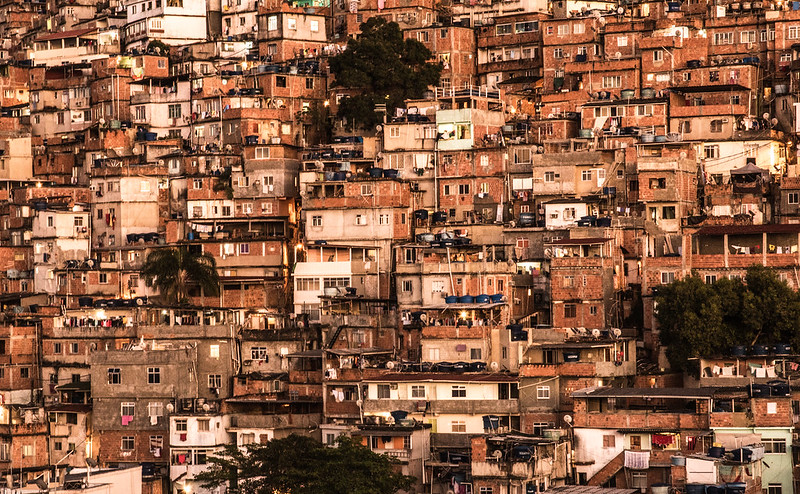

O que é favela?
Uma favela é um conjunto de habitações populares construídas de forma irregular em áreas urbanas.
O termo "favela" tem origem na Guerra de Canudos, quando o escritor e jornalista Euclides da Cunha descreveu um monte onde os soldados acamparam e fizeram moradias temporárias. A colina era coberta por uma planta espinhosa conhecida como favela.

Como surgiu as favelas?
A favela, como tudo no mundo, têm sua história. Apesar de parecer que sempre estiveram ali, os conglomerados habitacionais sem condições humanitárias mínimas, nasceram de várias lutas. E, se pensarmos bem, todas lutas por um mundo mais igualitário.
Assim, podemos dizer que tais lutas começaram com a lei áurea, passando pela derrubada dos cortiços cariocas; desembocando na árvore Favela, que dava nome ao morro de onde o canhão A Matadeira dizimou a população de canudos.
Enfim, são, como tudo na humanidade, milhares de fatores que fizeram esse aglomerado urbano, chamado favela, do jeito que o vemos hoje. Nesse sentido, favelas se transformaram em seres únicos, com identidade própria. Assim, para alguns, cada favela é como um indivíduo, com vida e vontade própria.
Por que se dá o nome de favela?
"O termo favela é derivado do nome da planta favela, uma espécie medicinal encontrada na região Nordeste do Brasil, mais precisamente no domínio da Caatinga. Seu nome científico é Cnidoscolus quercifolius Pohl, e ela é comumente referida também como faveleira. O nome foi primeiro atribuído ao Morro da Favela, que começou a se formar no final do século XIX, e passou a ser amplamente utilizado para se referir ao conjunto de moradias informais a partir da década de 1920."
"A origem do nome está associada à Guerra de Canudos, conflito que aconteceu entre os anos de 1896 e 1897, no interior do estado da Bahia, na região onde se formou o povoado de Canudos, liderado por Antônio Conselheiro. Esse conflito foi desencadeado quando o governo brasileiro à época enviou o Exército para dissolver o povoado.
Muitos membros do Exército Brasileiro retornaram para a capital fluminense sem ter um local de moradia, o que lhes havia sido prometido, e foram se instalar nas encostas do morros. Essa área, formada por residências precárias e de baixa renda, recebeu o nome de Morro da Favela, em referência à planta que era muito comum na região do povoado de Canudos. Atualmente esse conjunto habitacional é conhecido como Morro da Providência."
Características da favela:
As favelas são locais únicos de vivência, apresentando características bastante específicas e que refletem diretamente as particularidades da população que nelas vive e da cidade em que estão inseridas. Contudo, elas apresentam alguns aspectos em comum que são possíveis de se pontuar;
- Elevada densidade demográfica, com um grande número de moradores e moradias inseridos em uma pequena unidade de área;
- Prevalência de população de baixa renda;
- Residências construídas de maneira informal, pelo método da autoconstrução;
- Grande número de trabalhadores alocados no mercado informal ou em situação de desemprego;
- Localização em terrenos precários ou de elevado risco, como encostas de morros e planícies de inundação, geralmente afastadas dos centros das cidades;
- Baixo acesso à infraestrutura urbana essencial, como redes de saneamento básico e eletricidade;
- Atendimento precário de serviços urbanos de caráter público, como coleta de lixo, transporte coletivo, segurança, unidades de saúde e outros;
- Insuficiência de políticas públicas e de investimentos do Estado em melhorias estruturais.
Espacialmente falando, as favelas são a expressão da desigualdade social nos centros urbanos, fruto de um longo processo de exclusão socioespacial.
Características desfavoraveís:
- Infraestrutura inadequada.
- Favelas são caracterizadas pela falta de saneamento básico, como água potável, coleta de esgoto e coleta de lixo.
- Habitações precárias.
- As casas são construídas de forma informal em terrenos irregulares e de risco.
- Acesso limitado a serviços públicos.
- As favelas têm acesso precário ou inexistente a serviços públicos como iluminação, água, esgoto e coleta de lixo.
- Desigualdade social.
- A desigualdade social é um dos principais fatores que levam à favelização.
Ausência de políticas públicas.
- A falta de políticas públicas de acesso à moradia é um elemento que caracteriza o crescimento das favelas.
- A favelização é um sintoma da urbanização acelerada e desordenada, e resulta em falta de acesso a serviços básicos e segurança para os seus habitantes.